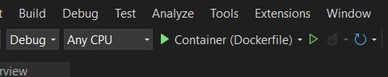

I had problems with using Docker inside Visual Studio 2022 and these notes describe my experiences.
When I create a new Web App Razor Pages project I don't add the solution file into the same folder as my project.
This creates the following example Dockerfile.
FROM mcr.microsoft.com/dotnet/aspnet:8.0 AS base
WORKDIR /app
EXPOSE 80
EXPOSE 443
FROM mcr.microsoft.com/dotnet/sdk:8.0 AS build
ARG BUILD_CONFIGURATION=Release
WORKDIR /src
COPY ["RazorRecordDB/RazorRecordDB.csproj", "RazorRecordDB/"]
RUN dotnet restore "./RazorRecordDB/RazorRecordDB.csproj"
COPY . .
WORKDIR "/src/RazorRecordDB"
RUN dotnet build "./RazorRecordDB.csproj" -c $BUILD_CONFIGURATION -o /app/build
FROM build AS publish
ARG BUILD_CONFIGURATION=Release
RUN dotnet publish "./RazorRecordDB.csproj" -c $BUILD_CONFIGURATION -o /app/publish /p:UseAppHost=false
FROM base AS final
WORKDIR /app
COPY --from=publish /app/publish .
ENTRYPOINT ["dotnet", "RazorRecordDB.dll"]
When I click on Container (Dockerfile) it will run the project in a container.

This is fine for running in Visual Studio but I found that if I tried to build an image from the Web App root folder where the Dockerfile was located it would fail.
To get around this issue I would have to copy the Dockerfile into the solution file root (one directory above) and build the image from that directory.
docker build -t razorrecorddb .
By doing this the image would build correctly. This means that Visual Studio must build the Dockerfile from a different folder to where the Dockerfile resides.
I can get around this issue by creating another Visual Studio solution and in this case adding the solution file to the Web App root folder (not something I would usually do).
This time the Dockerfile looks like this.
FROM mcr.microsoft.com/dotnet/aspnet:8.0 AS base
USER app
WORKDIR /app
EXPOSE 8080
EXPOSE 8081
FROM mcr.microsoft.com/dotnet/sdk:8.0 AS build
ARG BUILD_CONFIGURATION=Release
WORKDIR /src
COPY ["RazorTest.csproj", "."]
RUN dotnet restore "./RazorTest.csproj"
COPY . .
WORKDIR "/src/."
RUN dotnet build "./RazorTest.csproj" -c $BUILD_CONFIGURATION -o /app/build
FROM build AS publish
ARG BUILD_CONFIGURATION=Release
RUN dotnet publish "./RazorTest.csproj" -c $BUILD_CONFIGURATION -o /app/publish /p:UseAppHost=false
FROM base AS final
WORKDIR /app
COPY --from=publish /app/publish .
ENTRYPOINT ["dotnet", "RazorTest.dll"]
This works in Visual Studio and if I build the image from the Web App root folder.
docker build -t razortest .
I can now run this image in a container.
docker run -it --name razor-test -p 8080:8080 razortest
Note: The main takeaway from this is that if I create a solution with the .sln file in the way I normally do it I can modify the paths in a Dockerfile created in Visual Studio to get it to work in the Web App folder to manually create an image.
When using a Web App container running from Visual Studio and I add a standard connection string to connect to a SQL Server it will not work. This is the same if it is connecting to a SQL Server container or the local instance of SQL Server.
I can get around this with the following.
SQL Server instance.
"ConnectionStrings": {
"RecordDBContext": "Server=host.docker.internal;Database=RecordDB;User Id=sa;Password=mypassword;Encrypt=false;TrustServerCertificate=true;MultipleActiveResultSets=true;"
}
host.docker.internal correctly points to your local SQL Server instance.
Note: you can't connect to a SQL Server in this case with TrustedSecurity=true;. You have to use a SQL Server login.
If you want to connect to a SQL Server running in a container.
"ConnectionStrings": {
"RecordDBContext": "Server=host.docker.internal,11433;Database=RecordDB;User Id=sa;Password=mypassword;Encrypt=false;TrustServerCertificate=true;MultipleActiveResultSets=true;"
}
Where 11433 is my SQL Server container host port.
Note: If I am still running my solution in Visual Studio and I want to run my Web application in IIS Express instead of a container host.docker.internal will still work and connect to my database.
Why would I bother going to the effort of running Docker from Visual Studio?
There is a very good reason. This allows me to develop my application and continually recompile without having to manually build an image and run my container. I can also debug my application while running in a container.
Once I complete my application I can then build the final image and upload it to the Docker registry.